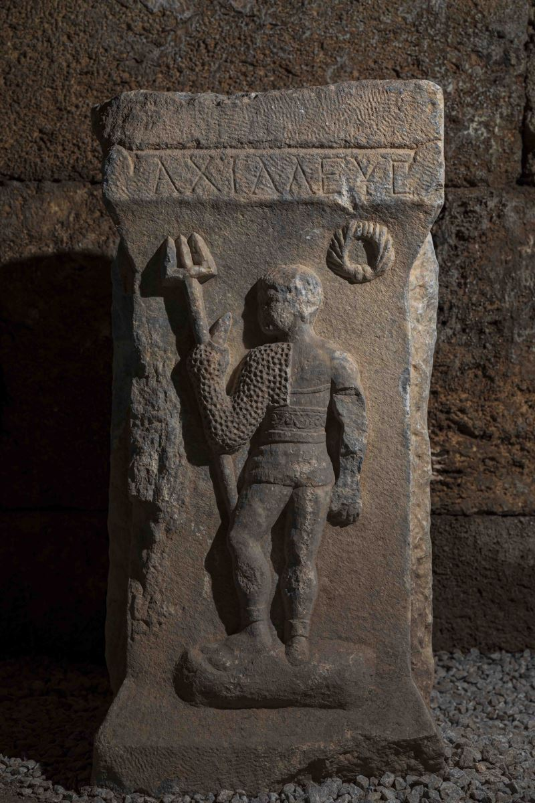

Aizanoi Antik Kenti
Ve Zeus Tapınağı

Aizanoi Antik Kenti
Aizanoi Antik Kenti Kütahya Çavdarhisar ilçe merkezinde, Kütahya’ya 50 kilometre uzaklıktadır. Penkalas (Kocaçay) Irmağı'nın yukarı kesiminde tanrıça Meter Steunene’nin kutsal mağarası civarında yaşayan Frigyalılar'ın öncüsü olarak antik kaynaklarda geçen Azan adlı mitoloji kahramanının, Su Perisi Erato ile efsanevi Kral Arkas'ın birleşmesinden Aizanoi şehrinin ortaya çıktığı düşünülmektedir.
Aizanoi kenti, antik Frigya'ya bağlı olarak yaşayan Aizanitis’lerin ana yerleşim merkeziydi. Kentin yüksek platosu üzerinde bulunan Zeus Tapınağı'nın çevresinde yapılan kazılarda, MÖ 3 bin yıllarına ait yerleşim izlerinin ortaya çıktığı görülmüştür. Helenistik Dönem'de bu bölge değişimli olarak Bergama’ya ve Bithynia’ya bağlı iken MÖ 133’de Roma egemenliğine girmiştir. Roma imparatorluk döneminde tahıl ekimi, şarap ve yün üretimi sayesinde zenginleşmiş ve ünü bölge sınırlarını aşmış olan Aizanoi’de kesin kentleşme bulgularına ancak MÖ 1'nci yüzyıl sonlarına doğru rastlanmaktadır. Yine ilk sikkelerin bu dönemde basıldığı bilinmektedir.

Aizanoi antik kenti en parlak dönemini MS 2 yüzyılda yaşamış, büyük imar faaliyetleri görmüş ve bu dönemde birçok yapı inşa edilmiştir. Erken Bizans Dönemi'nde piskoposluk merkezi iken, 7'nci yüzyıldan itibaren bu önemini yitirmiştir. Tapınak düzlüğü Orta Çağ'da bir hisara dönüştürülmüştür. Selçuklular Dönemi'nde Çavdar Tatarları tarafından üs olarak kullanılmasından dolayı buraya Çavdarhisar adı verilmiştir.
Aizanoi 1824 yılında Avrupalı gezginlerce yeniden keşfedilmiş,1830-1840’lı yıllarda incelenmiş ve tanımlanmıştır. 1926 yılında M. Schede ve D. Krencker başkanlığında Alman Arkeoloji Enstitüsü'nce ilk kazılar yapılmıştır. 1970 yılından bu yana her yıl düzenli olarak kazı çalışmaları devam etmektedir.

Kalıntılar arasında Anadolu’daki en iyi korunmuş Zeus Tapınağı, 15 bin kişi kapasiteli tiyatro ve tiyatroya bitişik nizamda yapılmış 13 bin 500 kişilik stadyum, iki hamam, dünyanın ilk ticaret borsa binası, sütunlu cadde, Kocaçay üzerinde ikisi ayakta kalmış beş köprü, iki agora, gymnasium, Meter Steunene kutsal alanı, nekropoller, antik bir bent, suyolları, kapı yapıları bulunmaktadır. Aizanoi antik kenti Efes, Bergama, Side gibi kentlerle çağdaştır.
Zeus Tapınağı
Irmağın batı kıyısına 200 metre uzaklıkta etrafı sütunlu galerilerle çevrili 130,5x112 metre boyutlarındaki alanın ortasında, bir podyum üzerine kuruludur.
8x15 ölçülerinde 120 adet İon ve 4 adet Korint üslubunda sütunlarla dipteras planlı olarak inşa edilmiştir. Frig Tanrıçası Meter Steunene'ye adanmış olan yer altı cellasına inen ve çatıya ulaşan bir merdiveni bulunmaktadır. Anadolu'daki en iyi korunagelmiş İon düzenindeki tapınaklardan biri olan yapının bezemelerinden özellikle akroterleri ilgi çekicidir. Batı alınlığında orta akroter akant dalları ve yaprakları arasında Tanrıça Kybele'nin büstüyle bezenmiştir. Doğu alınlık akroterindeyse Zeus büstü bulunmaktadır. Dört sütunlu avlusu ve agorasıyla M.S. 117-138 yılları arasında yapılmış tapınağın ön galeri duvarlarında; İmparotor Hadrian'i ve Aizanoi için önemli hizmetler görmüş Apuleius'u öven yazıtlar yer almaktadır.